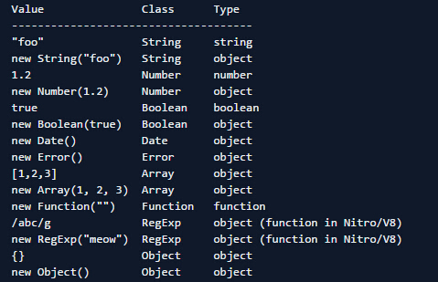

一、JavaScript数据类型
＃ JavaScript中如何检测数据类型
在刚开始学习JavaScript时，从《JavaScript高级程序设计》这本书得知检测数据类型是可以用typeof和instanceof这两个操作符，可是用的时候确产生了一些困惑。在这里说一下JavaScript中如何检测数据类型和typeof、instanceof的用法
typeof 操作符
typeof 操作符（和 instanceof 一起）或许是 JavaScript 中最大的设计缺陷， 因为几乎不可能从它们那里得到想要的结果。 尽管 instanceof 还有一些极少数的应用场景，typeof 只有一个实际的应用（这个实际应用是用来检测一个对象是否已经定义或者是否已经赋值）， 而这个应用却不是用来检查对象的类型。
JavaScript 类型表格

上面表格中，Type 一列表示typeof操作符的运算结果。可以看到，这个值在大多数情况下都返回 "object"。
Class 一列表示对象的内部属性[[Class]]的值。
JavaScript 标准文档中定义: [[Class]]的值只可能是下面字符串中的一个： Arguments, Array, Boolean, Date, Error, Function, JSON, Math, Number, Object, RegExp, String.
为了获取对象的[[Class]]，我们需要使用定义在 Object.prototype 上的方法 toString。
function is(type, obj) {var clas = Object.prototype.toString.call(obj).slice(8, -1); return obj !== undefined && obj !== null && clas === type;}is('String', 'test'); // trueis('String', new String('test')); // true
上面例子中，Object.prototype.toString 方法被调用，this 被设置为了需要获取[[Class]]值的对象。
注：Object.prototype.toString 返回一种标准格式字符串，所以上例可以通过 slice 截取指定位置的字符串，如下所示：
Object.prototype.toString.call([]) // "[object Array]"Object.prototype.toString.call({}) // "[object Object]" Object.prototype.toString.call(2) // "[object Number]"测试为定义变量
typeof foo !== 'undefined'上面代码会检测 foo 是否已经定义；如果没有定义而直接使用会导致 ReferenceError 的异常。 这是 typeof 唯一有用的地方。
结论
为了检测一个对象的类型，强烈推荐使用 Object.prototype.toString 方法； 因为这是唯一一个可依赖的方式。正如上面表格所示，typeof 的一些返回值在标准文档中并未定义， 因此不同的引擎实现可能不同。
除非为了检测一个变量是否已经定义，我们应尽量避免使用 typeof 操作符。
instanceof 操作符
instanceof操作符用来比较两个操作数的构造函数。只有在比较自定义的对象时才有意义。 如果用来比较内置类型，将会和 typeof 操作符 一样用处不大。
比较自定义对象
function Foo(){}function Bar(){}Bar.prototype=new Foo();new Bar() instanceof Bar;//truenew Bar() instanceof Foo;//true//如果仅仅设置 Bar.prototype 为函数 Foo 本身，而不是 Foo 构造函数的一个实例Bar.prototype = Foo;new Bar() instanceof Foo; // falseinstanceof 比较内置类型
new String('foo') instanceof String; // truenew String('foo') instanceof Object; // true'foo' instanceof String; // false'foo' instanceof Object; // false有一点需要注意，instanceof 用来比较属于不同 JavaScript 上下文的对象（比如，浏览器中不同的文档结构）时将会出错， 因为它们的构造函数不会是同一个对象。
结论
instanceof 操作符应该仅仅用来比较来自同一个 JavaScript 上下文的自定义对象。 正如 typeof 操作符一样，任何其它的用法都应该是避免的。